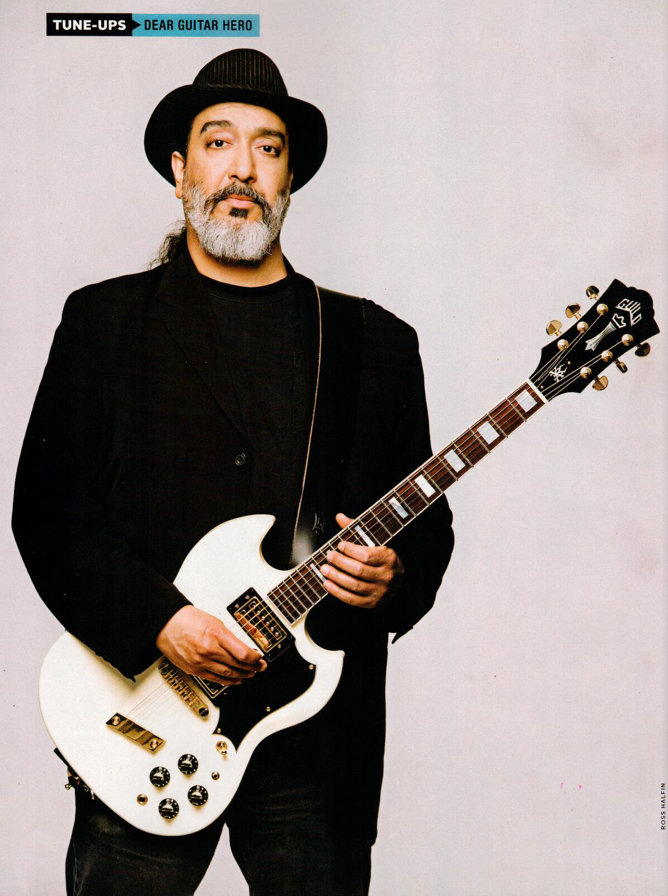
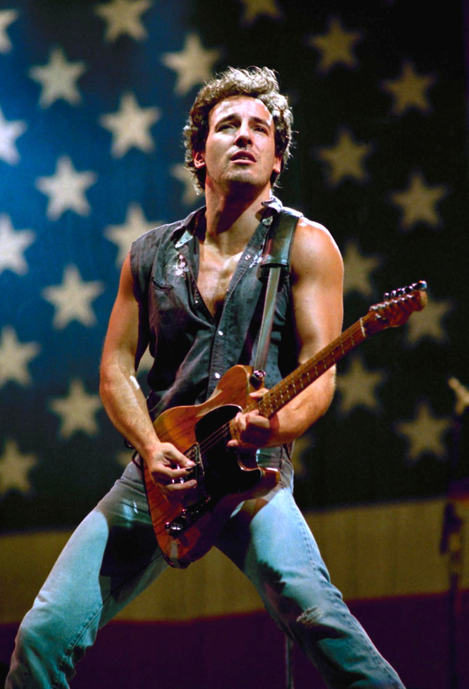

| Here are some famous guitarists |
 |
Angus Young: the lead guitarist and a founding member
of the Australian rock band AC/DC. |
 |
Tom Morello: the guitarist for Rage Against the Machine,
an alternative band from the 1990's. They have also reunited recently. |
 |
Slash: The lead guitarist of the band Guns n' Roses,
who have recently reunited after a lengthy hiatus. |
 |
Kim Thayii: the guitarist for the grunge band, Soundgarden,
who emerged in the "Seattle Sound" scene of the 1990's. |
 |
Dan Auerbach: is the lead guitarist of the alternative
rock band, the Black Keys, who have recently announced
a North American tour. |
 |
Bruce Springsteen: a guitarist and singer who performed as a
solo act backed by the E Street Band |